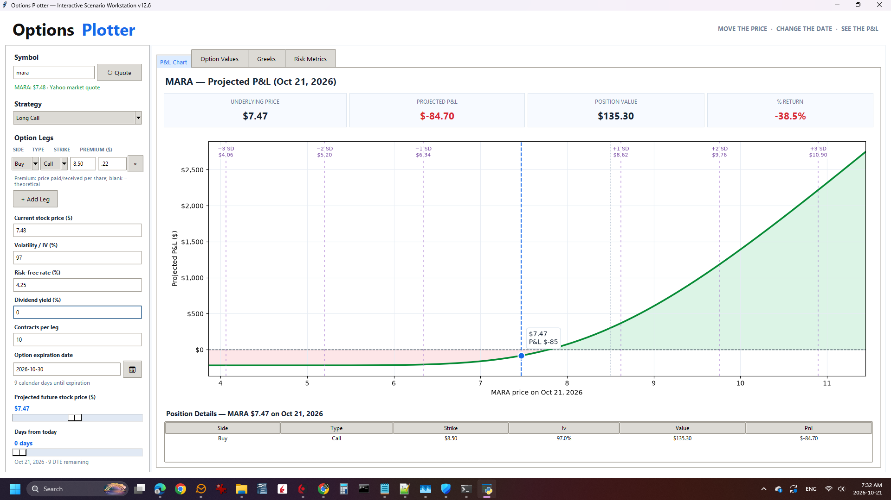

↔️
Interactive Price Plotting
Move the projected future price directly on the chart to explore different outcomes.
Where could the stock price go — and when? Move the projected price on the chart, select a future date, and instantly explore your options' modeled profit and loss.
A full-size look at the Options Plotter interface. Explore the chart and model potential outcomes before placing a trade.

Move the projected stock price, then move forward through time. Watch how the modeled profit and loss responds to each change.
Start with your market outlook, then see what that price-and-time combination could mean for your position.
Move the projected future price directly on the chart to explore different outcomes.
Select a future date and estimate what your options could be worth at that time.
See projected values change as you adjust your price scenario.
Explore potential outcomes before your options reach expiration.
Understand potential gains, losses, and breakeven points.
Explore price targets and holding periods before placing a trade.
The beta is free. Explore price scenarios, examine modeled outcomes, and get familiar with the plotting workflow.
YOUR SOFTWARE. YOUR COMPUTER.
Options Plotter is part of the Trader Repository family of locally installed trading tools.
Explore Trader Repository ↗Options Plotter v1.0.0 Beta
Windows installer
Explore our other standalone trading applications.